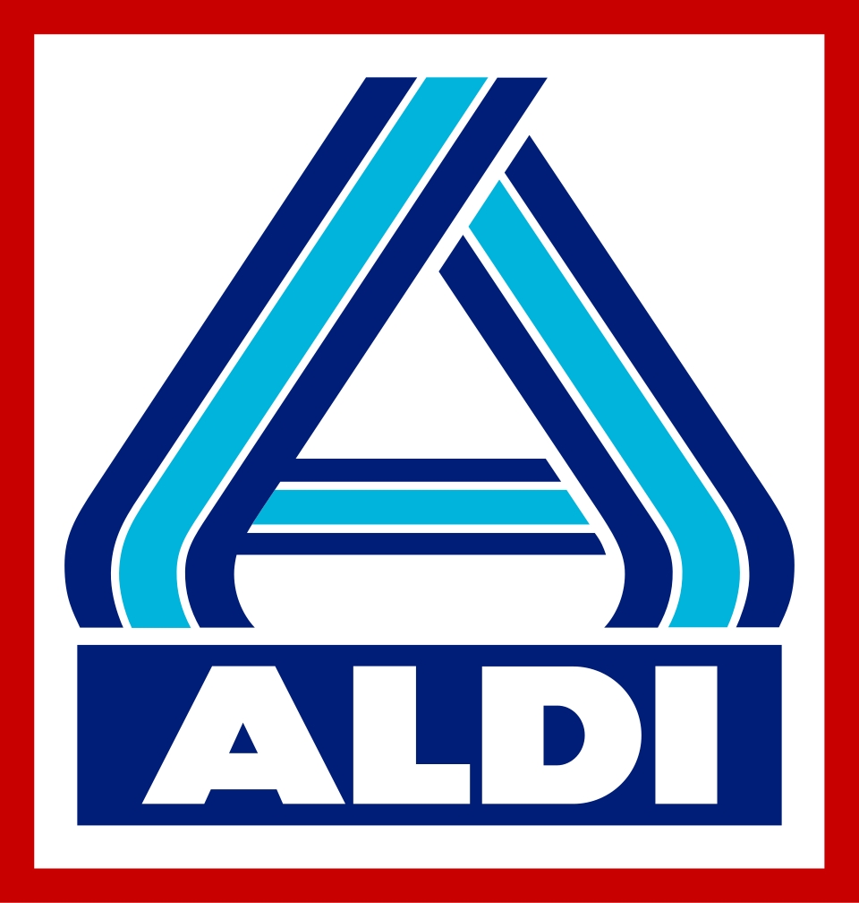

알디 Aldi
알디(Aldi)는 소품종과 PB상품 중심의 구성을 통해 낮은 가격을 지향하는 독일 최대 할인마트 브랜드이다. 유럽과 미국, 오스트레일리아에서 점포를 운영한다.
최종 업데이트

알디는 어떤 브랜드인가
알디는 잘 팔리고 회전율이 높은 기본 식료품과 PB상품을 중심으로 취급하는 할인마트이다. 상품 종류와 매장 서비스를 줄이고 대량 구매와 간소한 운영을 통해 판매 가격을 낮추는 방식을 채택한다.
유럽을 비롯해 미국과 오스트레일리아에서 10,000개에 가까운 점포를 운영한다. 사업은 Aldi Nord와 Aldi Süd라는 별도 법인으로 나뉘며, 두 법인은 서로 경쟁하지 않도록 운영 지역을 분할한다.
Aldi Nord는 독일 북동부와 프랑스·베네룩스·이베리아 등을, Aldi Süd는 독일 남부와 영국·아일랜드·오스트레일리아 등을 담당한다.
알디는 어떻게 시작되고 성장했나
1945년 Karl Albrecht와 Theo Albrecht 형제가 부친 사후 어머니가 운영하던 가업을 이어받아 운영을 시작했다. 1948년 두 형제는 판매 상품 수를 줄이고 대량 구매로 가격을 낮추는 방식으로 가게를 개조했다.
Albrecht KG는 1954년 에센의 다른 지역에 첫 지점을 열었고, 1955년 노르트라인베스트팔렌주에서 100개가 넘는 지점을 운영했다. 1961년 두 형제는 회사를 Aldi Nord와 Aldi Süd로 분할하고 각각 북부와 남부 지점을 인수했다.
이후 Albrecht와 Discount의 앞부분을 결합한 Aldi라는 이름으로 식료품 할인 방식을 전개했다.
알디의 브랜드 아이덴티티는 무엇인가
상품과 서비스를 덜어내는 운영 원칙을 바탕으로 소품종·대량 구매·PB상품 중심의 할인 유통 구조를 구축한 브랜드이다.
알디의 대표 제품과 서비스는 무엇인가
판매 상품의 종류를 줄이고 잘 팔리는 기본 식료품과 PB상품을 중심으로 매장을 구성한다. 대량 구매를 통해 조달 가격을 낮추며, 배송용 박스를 판매 진열에 활용하고 팔레트나 자체 제작 선반을 사용하는 운영 방식을 채택한다.
개별 상품 가격표, 고가 매장 인테리어, 광고, 매장 장식, 외상 판매, 할인 쿠폰 등 비용을 유발하는 요소를 생략한다. 신선 식품도 줄여 재고 관리와 제품 유지에 필요한 비용을 절감하고 낮은 판매 가격을 지향한다.
알디는 지금 어떤 상태인가
Aldi Nord와 Aldi Süd는 각각 독립적으로 운영하며 서로 경쟁하지 않도록 사업 지역을 나눈다. Aldi Nord는 에센에 본사를 두고 미국의 Trader Joe's 점포를 포함한 북부 권역을 운영한다.
Aldi Süd는 뮐하임에 본사를 두고 독일 남부와 영국, 아일랜드, 스위스, 오스트리아, 오스트레일리아 및 미국 Aldi를 운영한다.
알디 로고는 어떻게 변해왔나
시기는 위키데이터 로고 기간 또는 위키미디어 커먼즈 파일 정보 기준입니다. 이미지를 누르면 원본 파일과 라이선스를 볼 수 있습니다.
자주 묻는 질문
알디는 어느 나라 브랜드인가요?
알디는 독일의 리테일·커머스 브랜드입니다.
알디는 언제 설립되었나요?
알디는 1946년 설립되었습니다.
알디의 브랜드 아이덴티티는 무엇인가요?
상품과 서비스를 덜어내는 운영 원칙을 바탕으로 소품종·대량 구매·PB상품 중심의 할인 유통 구조를 구축한 브랜드이다.
알디의 대표 제품은 무엇인가요?
판매 상품의 종류를 줄이고 잘 팔리는 기본 식료품과 PB상품을 중심으로 매장을 구성한다.
알디는 현재 어떤 상태인가요?
Aldi Nord와 Aldi Süd는 각각 독립적으로 운영하며 서로 경쟁하지 않도록 사업 지역을 나눈다.
알디의 창업자는 누구인가요?
알디의 창업자는 카를 알브레히트, 테오 알브레히트입니다(위키데이터 기준).
알디의 본사는 어디에 있나요?
알디의 본사는 에센에 있습니다(위키데이터 기준).
출처와 검증
알디 관련 참고: 공식 웹사이트 · 위키데이터 Q125054 · 한국어 위키백과 · 영어 위키백과. 브랜드명은 한글과 원어를 함께 표기하되 데이터에 없는 표기는 만들지 않습니다. 기원 국가·설립연도는 검수된 정의문에서 확인된 값을 우선하고, 없을 때만 공식 웹사이트 URL이 일치하는 위키데이터 개체의 값을 씁니다. 웹 첫 보관은 인터넷 아카이브가 공식 사이트 첫 화면을 처음 보관한 날로, 사이트 개설일과 다를 수 있습니다. 위키데이터 값은 2026-09-14 기준입니다.